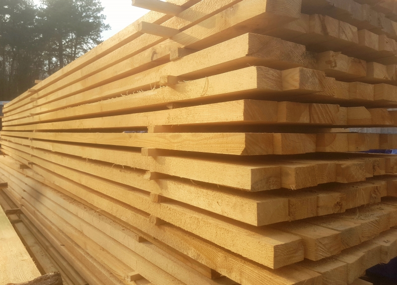

Welcome to mediena
Mediena, jos gaminiai medžiagos, įrenginiai - Skelbiu.lt
2020.10.29 07:56
X Dėl geresnės Skelbiu.lt paslaugų kokybės naudojame slapukus (angl. cookies).
Naršydami toliau, patvirtinate, kad sutinkate su slapukais. Tai bet kada galėsite atšaukti, pakeisdami nustatymus. Skelbiu.lt slapukų politika . Lankomiausias
skelbimų portalas LT RU ( 0 ) Įsiminti skelbimai ( 0 ) Peržiūrėti skelbimai Paieškos ( 0 ) Prisijungti Registruotis Mediena, jos gaminiai, Medžiagos, įrenginiai (1301) Gauti naujus skelbimus: Ekrane El. paštu + Įdėti skelbimą Įsiminti skelbimai (0) Skelbimų: 1301 Atnaujinti viršuje Naujausi viršuje Atnaujinti viršuje Pigiausi viršuje Brangiausi viršuje
NEPRALEISKITE NAUJŲ SKELBIMŲ
Mediena, jos gaminiai, Medžiagos, įrenginiai
Gaukite naujus skelbimus į ekraną Gaukite naujusskelbimus el. paštu Vilnius, ... prieš 1 d. 18
Statybinė mediena!nuo 139 eur/m3.dvitėjinės sijos
SANDĖLYJE TURIME IR 7 - 8 METRŲ MEDIENOS! Pramoninis dažymas: tvoros lentelės, dailylentės, šiauštos lentos nuo 3,5 eur/m2. Atliekame medienos priešgaisrinį impregnavimą! Dvitėjinės sijos nuo 4,8 eur - UAB "Agro Wood" - nemokamas... Būklė: nauja 139 € Vilnius spalio 16 d. 18Akcija! Mediena Statyboms ,sausa. Reali Kaina
SUPER PASIŪLYMAS IŠPARDAVIMAS: 25x100x3.0 tik 150€/м3 25x50x2,0 tik 139€/м3* vidaus ir lauko dailylentes: nuo 5,9 €/м2 Grindines lentos nuo 8,4 €/м2 ! TERASA(impregnuota vakume) 28x120x4,8 - (10.65€/м2 su pvm) 28x145x6- (10.89€/м2 su pvm)... Būklė: nauja 139 € Kaunas, ... spalio 7 d. 12Terasa, dailylentės, tvorų-pakalimų lentos
Paraduodam vakume impregnuotas terasines lentas: (Rudos -rifliuotos) 28x120x3,0-6,0m 11.80eur/m2 28x145x3,0-6,0m 11.80eur/m2 35x145x5,4m eur/m2 Tvorų,pakalimų lentos : 20x100x3,0-6,0m 6,80eur/m2 20x120x3,0-6,0m 6,80eur... Būklė: nauja Kaunas, ... spalio 7 d. 12Statybine 165€, apdailine, džiovinta,kalibruota
Turim įvairių išmatavimų brokuotos medienos, galim paruoduoti su -30% / -50% / -70% nuolaida Parduodame įvairių išmatavimų: statybinę medieną, dailylentes, vidaus -lauko, obliuotas pakalimų, tvorų lentas, terasas, eglės,pušies... Būklė: nauja 165 € Vilnius, ... spalio 19 d. 9Lentpjūvė Vilniuje pjauna statybinę medieną !
AKCIJA ! 3 klasės mediena. Lentos 25x100x2000 - nuo 130 eur Lentos 25x100x3000 - nuo 130 eur KITOS KOKYBIŠKOS I IR II KLASĖS MEDIENOS KAINA NUO 170 EUR/m3. Esame lentpjūvė su 20 metų patirtimi. Savo pastovaus, kvalifikuoto personalo dėka visi... Būklė: nauja 130 € Klaipėdos r., ... prieš 1 d. 8Dvitėjinės sijos,onebeam,nemokamas Pristatymas
Nemokamas pristatymas visoje Lietuvoje, perkant nemažiau 100 metrų. OneBeam I- BEAM Dvitėjės Sijos : Namo sienų karkasui Pperdangos konstrukcijai Stogo konstrukcijai Fasado šiltinimo karkasui (Pvz šiltinant poliuretanu, sijas pagaminsime... Būklė: nauja 0,01 € Alytaus r., ... prieš 1 d. 7Lauko pavesine, stogine, terasa
Lauko pavėsinė-stoginė Mūsų gaminio privalumai: *Greitis - užsakius pavėsinę galėsite susirinkti patys. Užtruksite vos keletą valandų ir jūsų statinys stovės pas jus kieme. *Taupumas - sutaupysite daug laiko, kadangi šias konstrukcijas... Būklė: nauja 2 000 € Vilnius, ... prieš 1 d. 6Vilniaus Medienos Centras. Visa mediena vietoje!
Daugybė akcijų! Kainos nuo 129 Eur/m3 ! Sandėlyje VISADA turime didžiausią sandėliuojamos medienos kiekį Vilniaus apskrityje. Statybinė mediena, dailylentės, terasinės lentos (maumedis, pušis), C24 graduota, impregnuota, terasa, tašai terasai,... Būklė: nauja 129 € Vilnius, ... spalio 19 d. 6Statybinė impregnuota mediena 3 m, 6m
Parduodame statybinę impregnuota mediena Pas mus rasite visą medieną namui statyti. Pristatymas visoje Lietuvoje. Sandėlis: Kalno g. 4A, Pagiriai Statybinė mediena namams: namo sienoms, namo stogui, balkonui, pavėsinei, tvorai. Perkant... Būklė: nauja 135 € Vilnius prieš 1 d. 5Statybine / Pjautine / Impregnuota mediena
Parduodame geros kokybės statybinę (stogo) medieną: Lygus kraštai (status kampai 90 laipsnių) - be bangavimų! Aukštos kokybės mediena, be žievės! Nuotraukose atvaizduota realiai mūsų parduodama mediena. Nuotraukas kopijuoti ir platinti be... Būklė: nauja 130 € Reklama Kita prieš 11 val. 4Superku senas lentas - tvartu ardymas. Mediena.
- nemokamai atnaujinam senu ukiniu pastatu (svirnu, tvartu, kluonu) senas lentas i naujas lentas (medziagos ir darbas is musu puses ieina nemokamai). - superkame senu ukiniu pastatu (svirnu, tvartu) lentas, 130 eur uz 1 m3 -nemokamai... Būklė: naudota Ieško Plungės r., ... prieš 10 val. 4Statybinė Mediena Mobilus Gateris
Parduodame statybinę medieną 6m 7m,8m ilgiu Galime pasiūlyti impregnuotą statybinę medieną. Impregnuota mediena + 15eur/m3. Perkant didesnius taikome nuolaidas. Taip pat nuolaidos taikomos stogdengiams, statybininkams. Statybinė mediena/... Būklė: nauja Klaipėda, ... prieš 1 d. 4Azuolo lentos A/a A/b
Europinis ąžuolas. Dvigubo pjovimo lentos A/A A/B( drėgnumas 8% +/-2 %) storis 50mm. ilgis 2500-3000m. plotis 100-250mm. kaina 1250€/m3. Būklė: nauja Plungės r., ... prieš 1 d. 3Pjuvenos
Perkame medienos pjuvenas. atsiskaitome iš karto. sudarome sutartis pastoviam pirkimui. Būklė: naudota Ieško Vilnius spalio 11 d. 3Kaminu sistemos
Siulome isigyti musu gaminamus ideklus I esamus kaminus ir apsildintus dumtraukius Siulome Bendradarbiauti ! http://kaminai-ideklai.lt/about-us/ kaminu komplektus pirtisms kaminai-ideklai.lt/paslaugos/dumtraukiu-komplektai-pirtims... Būklė: nauja 60 € Vilnius, ... prieš 1 d. 3Juodalksnio,drebulės,liepos dailylentės,gultai
Gamintojas parduoda juodalksnio,liepos,termo medienos dailylentes vidaus apdailai,pirtims. 15x120x600,800,1200,1500,1800,2100,2400,2700,3000. 15x90x600,800,1200,1500,1800,2100,2400,2700,3000. 15x70x1500,1800,2100,2400,2700,3000. Kaina nuo... Būklė: nauja 5 € Šiauliai prieš 46 min. 3Statybine mediena, dailylentes, terasines lentos
Parduodame statybine dziovinta mediena: 50x150x6000 35x125x6000 35x125x4000 22x130x4000 Kubilines lentos Vidaus dailylentes 12,5x95x3000 Isores dailylentes 19x146x6000 Terasines lentos Kalibruota mediena : 45x145x6000 28x45x6000 ... Būklė: nauja 170 € Alytus, ... prieš 1 d. 3Akcija! Pirties alksnio dailylentėms !
JUODALKSNIO PIRTIES DAILYLENTĖS! Akcija ! Kaina nuo 12,53eu/m2 "krenta" iki 11,95 eu/m2!. Akcija vyksta perkant nuo 30m2 ir daugiau. Parduodame pirties dailylentes, gultus Turime juodalksnio... Būklė: nauja 11,95 € Alytus, ... prieš 1 d. 3Lauko dailylentė Alytuje. Patraukli kaina !
Išskirtinis pasiūlymas kokybiškai 19 - 21mm storio lauko dailylentei Alytuje! Mediena - šiaurinė eglė (Permės, Archangelsko sritys). Kokybė - AB. Profilis LNS (šiauštas paviršius) 20-21 * 145(133) * 5100/6000 - kaina nuo 8,30 Eur su PVM už 1m²... Būklė: nauja 8,50 € Klaipėda spalio 20 d. 2Statybinė, obliuota mediena, dailylentės malkos.
Parduodame statybinę medieną pagal kliento duotus matmenys. Parduodame malkas, atraižas ir lentų galus. Taip pat teikiame medienos obliavimo paslaugas. Gaminame dailylentes, pakalimo lentas, terasines lentas. Taip pat gaminame padėklus... Būklė: nauja Vilnius, ... prieš 1 d. 2Cumaru -Brazilijos Tikas Terasinės / Fasado Lentos
SVARBU: tikrojo Cumaru botaninis pavadinimas - Dipteryx spp. (Dipteryx Odorata, Dipteryx Alata.). Visos kitos medienos rusys, kuriu botaninis pavadinimas ne Dipteryx seimos, nera Cumaru ir neatitinka nei techninemis savybemis, nei kaina, nei tuo... Būklė: nauja 6,90 € Kaunas, ... prieš 1 d. 2Ibeam Dvitėjinės Sijos Pristatome Visoje Lietuvoje
MAŽIAUSIOS KAINOS GARANTIJA.ESANT BUTINYBEI PAGAMINAME SKUBIAI,PER 3 DARBO DIENAS.RADOTE PIGIAU? SUSISIEKITE PASIŪLYSIME DAR MAZESNĘ KAINĄ. SIJOS GAMINAMOS IS SERTIFIKUOTOS OSB PLOKSTES IR SERTIFIKUOTOS MEDIENOS, ATITINKANCIOS C24 ZENKLINIMO... Būklė: nauja Vilnius, ... prieš 1 d. 2I-beam sijos. Pristatymas Visoje Lietuvoje.
MAŽIAUSIOS KAINOS GARANTIJA.ESANT BUTINYBEI PAGAMINAME SKUBIAI,PER 3 DARBO DIENAS.RADOTE PIGIAU? SUSISIEKITE PASIŪLYSIME DAR MAZESNĘ KAINĄ. SIJOS GAMINAMOS IS SERTIFIKUOTOS OSB PLOKSTES IR SERTIFIKUOTOS MEDIENOS, ATITINKANCIOS C24 ZENKLINIMO... Būklė: nauja Kaunas, ... prieš 53 min. 2Dailylentės, grindinės, terasinės, tvoros lentos
Patraukliomis kainomis parduodame vidaus ir lauko dailylentes, pirties dailylentes, gultai (liepa, juodalksnis, drebulė), grindines, terasines, tvoros bei pakalimo lentas iš Šiaurinių Rusijos regionų. Pristatome visoje Lietuvoje. Džiovinta... Būklė: nauja 5,90 € 1 2 3 4 5 6 Įsiminti skelbimai Įdėkite skelbimąPopuliarios paieškos:
mediena vilnius
mediena
lauko dailylentes
laiptai
mediena klaipeda
lentos kaunas
rastai
lentos vilnius
lentos
mediena kaunas
azuolo lentos
osb
uosio
osb plokstes
lentos panevezys
Prisijunk ir rask savo įsimintus skelbimus visur – kompiuteryje, telefone, planšetėje ARBA Jungtis su Facebook Jungtis su Google Skelbiu.lt pagalba: +370 664 55727 Darbo laikas: I-V 08:20 - 17:00 Naudojimo taisyklės / D.U.K. Kontaktai Svetainės struktūra D I G I N E T